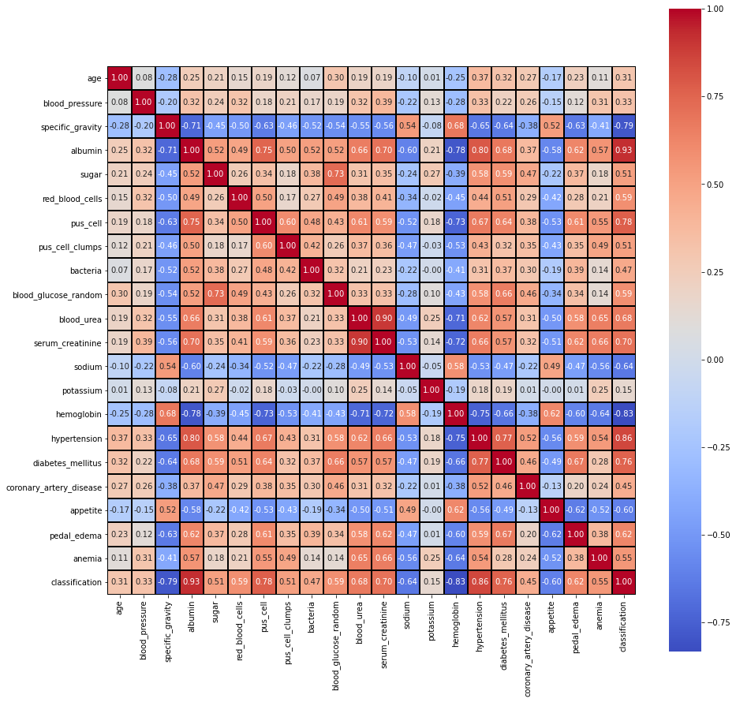

Do you have Chronic Kidney Disease ?
The purpose of this project was to analyze existing data to make classifications on which patient may have chronic kidney disease, using a supervised methodology.
I used Python Pandas programming for cleanup, SQL Database : Postgres for Database Management
AWS. Front End deveolpement
HTML
CSS
Bootstrap
Data Visualization
Matplotlib
Methods: Supervised (model.predict()), Scikit Learn Library. Evaluation Model DescisionTreeClassifier. Datasource: Kaggle (age - age,bp - blood pressure,sg - specific gravity,al - albumin,su - sugar,rbc - red blood cells,pc - pus cell,pcc - pus cell clumps,ba - bacteria,bgr - blood glucose random,bu - blood urea,sc - serum creatinine, sod - sodium,pot - potassium,hemo - hemoglobin,pcv - packed cell volume,wc - white blood cell count,rc - red blood cell count,htn - hypertension,dm - diabetes mellitus,cad - coronary artery disease,appet - appetite,pe - pedal edema,ane - anemia,class - class)
